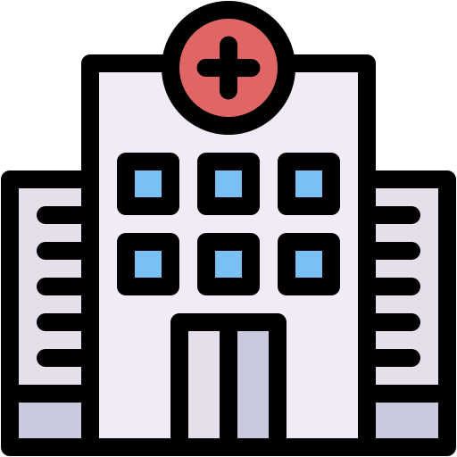
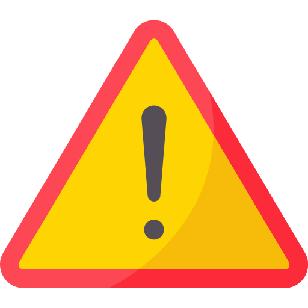

les Types d’Erreurs Médicales
-

Infections Nosocomiales : contractées dans un établissement de santé.
-
Erreurs Médicales : diagnostic erroné, oubli de matériel, défaut d’information.
-

Aléas Thérapeutiques : complications imprévisibles non imputables à une faute.
-

Effets Secondaires : liés à la prise de médicaments.